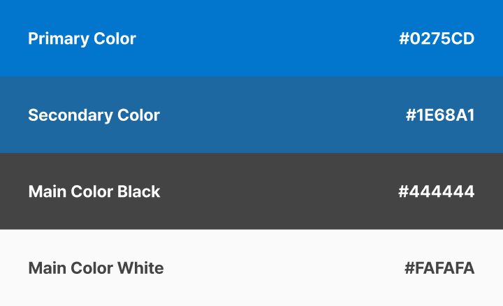
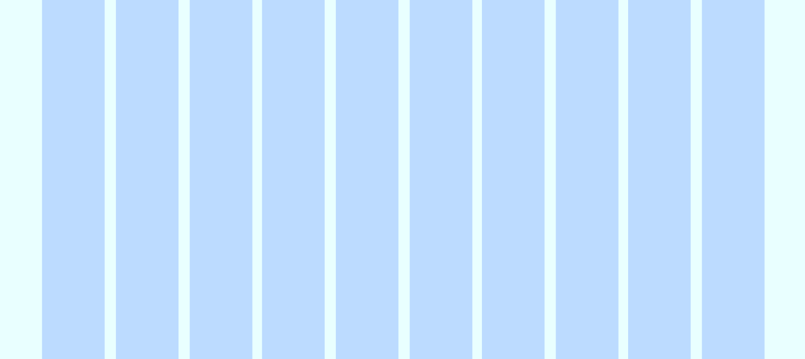
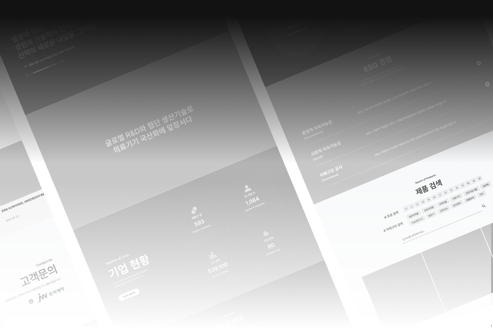
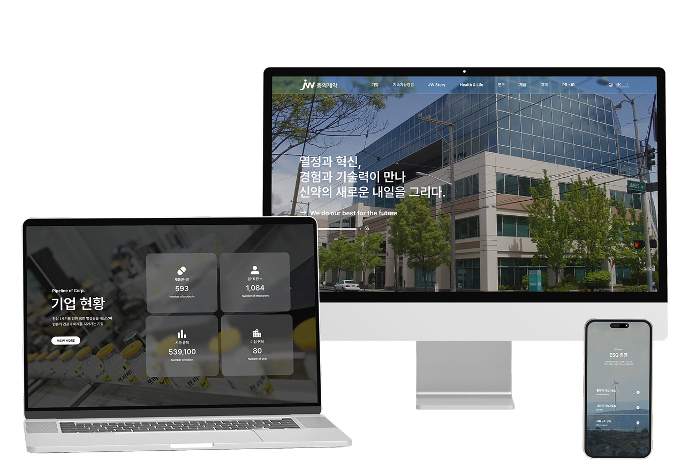

Web Redesign
Presonal Project


Overview
중외제약은 국내 제약 산업을 선도하는 대규모 기업임에도 불구하고, 기존 웹사이트는 기업의 위상과 브랜드 가치에 비해 다소 소극적이고 복잡한 인상을 주었습니다.이에 기업이 가진 신뢰도와 규모감을 보다 명확하게 전달할 수 있도록 정보 구조를 재정비하고 시각적 완성도를 강화한 웹 리디자인을 진행하였습니다.
이번 프로젝트는 중외제약의 전문성과 브랜드 이미지를 사용자 경험 전반에 자연스럽게 녹여내는 데에 초점을 맞추었습니다.

Project Guide
고객친화적 디자인 설계
중외제약 웹사이트의 구조적, 디자인적 문제점을 발견하고아래의 솔루션을 바탕으로 리디자인할 것을 목표로 하였습니다.
Problem
Solution
내용 삽입
한줄 간략 내용 추가
내용 삽입
한줄 간략 내용 추가내용 삽입
한줄 간략 내용 추가
내용 삽입
한줄 간략 내용 추가내용 삽입
한줄 간략 내용 추가
내용 삽입
한줄 간략 내용 추가Design System
Typo
Korean sans serif Typeface
프리텐다드

Color

Grid
10 Colomns Grid
Margin 140px
Gutter 20px

Wireframe

Design Page
방문자가 이용하기 편리한 고객 친화적인 레이아웃을 제작하여이를 바탕으로 웹페이지를 전체적으로 변화시켰음


브랜드의 정체성을 나타낸 배너 디자인
중외제약의 설립 모티브를 고객이 알아볼 수 있도록관련 이미지에 슬로건을 포함하여 제작하였습니다

브랜드의 정체성을 나타낸 배너 디자인
중외제약의 설립 모티브를 고객이 알아볼 수 있도록관련 이미지에 슬로건을 포함하여 제작하였습니다

브랜드의 정체성을 나타낸 배너 디자인
중외제약의 설립 모티브를 고객이 알아볼 수 있도록관련 이미지에 슬로건을 포함하여 제작하였습니다
브랜드의 정체성을 나타낸 배너 디자인
중외제약의 설립 모티브를 고객이 알아볼 수 있도록관련 이미지에 슬로건을 포함하여 제작하였습니다

브랜드의 정체성을 나타낸 배너 디자인
중외제약의 설립 모티브를 고객이 알아볼 수 있도록관련 이미지에 슬로건을 포함하여 제작하였습니다

브랜드의 정체성을 나타낸 배너 디자인
중외제약의 설립 모티브를 고객이 알아볼 수 있도록관련 이미지에 슬로건을 포함하여 제작하였습니다
브랜드의 정체성을 나타낸 배너 디자인
중외제약의 설립 모티브를 고객이 알아볼 수 있도록관련 이미지에 슬로건을 포함하여 제작하였습니다

브랜드의 정체성을 나타낸 배너 디자인
중외제약의 설립 모티브를 고객이 알아볼 수 있도록관련 이미지에 슬로건을 포함하여 제작하였습니다